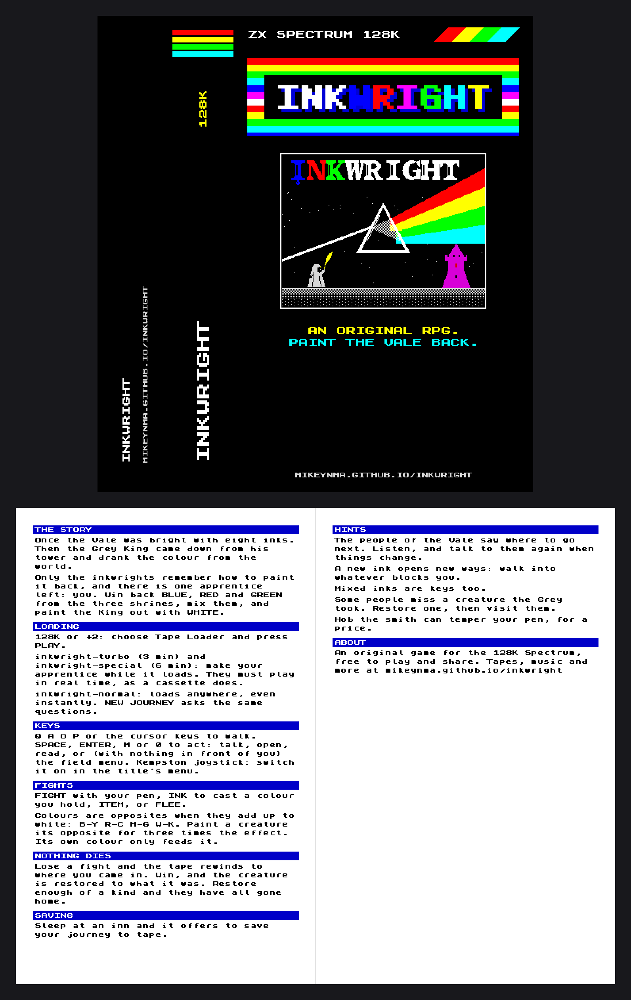

128K20 November 2026
How to play: the keys, hints, and a tape inlay
Everything to get going: how to load it, the keys, how fights work, and hints for when you are stuck, with the answers hidden until you ask. And a cassette inlay to print at real size, with a leaflet that folds into the case.
INKWRIGHT is played with a few keys and a lot of talking. The people of the Vale say where to go next: when you are not sure, talk to everyone again. When you are really stuck, the hints below give a nudge, and the answer only if you ask for it.

How to play
Loading
On a 128K or +2, choose Tape Loader and play the tape. In an emulator, open the .tap as a tape. inkwright-turbo.tzx (three and a half minutes) and inkwright-special.tap (6) let you make your apprentice while they load, so they must play in real time, as a cassette does (ZX Spin and Retro Virtual Machine with fast loading off). inkwright-normal.tap loads anywhere, even instantly; NEW JOURNEY then asks the same questions. Downloads are on the front page.
The keys
Q A O P or the cursor keys to walk; SPACE, ENTER, M or 0 to act. Facing someone, you talk; facing a chest, a sign or an altar, you use it; with nothing in front of you, the field menu opens: status, items, MEND, the map and the colour journal. A Kempston joystick works: switch it on in the title's menu.
Fights
FIGHT with your pen, INK to cast a colour you hold, ITEM for a tonic or an ink pot, or FLEE. Colours are opposites when they add up to white, and an opposite does three times the damage; a monster's own colour heals it. Nothing dies: beaten, a monster is restored to the creature it was, and if you lose, the tape rewinds.
Saving
Sleep at an inn and it offers to save your journey to tape; LOAD FROM TAPE on the title brings it back. Saves from every earlier version still load.
Hints
Where do I start? (show the answer)
The Tide Shrine, on the island in the Tide Mere, east of Inkwell: it needs no ink at all. Fight a few things in the Meadows on the way, so you go in at level 2 or 3.
The river is in the way. (show the answer)
Win BLUE at the Tide Shrine, then walk into the shallow ford south of the Meadows. It freezes, and the south opens up.
A wall of thorns, a chasm with no bottom... (show the answer)
Every ink is a key. RED burns thorns (there is a hedge north of Inkwell), GREEN grows vines over a chasm (the Rift). Walk into the thing that blocks you once you hold its ink.
This fight is too hard. (show the answer)
Paint the monster its opposite: the legend under every fight shows the pairs (B-Y, R-C, M-G, W-K), three times the damage. Its own colour heals it. Keep INK POTs and TONICs for guardians, and once you have GREEN, MEND. And losing costs only time: the tape rewinds to where you came in.
The Grey King shrugs off my colours. (show the answer)
He is black: everything but WHITE does him half. WHITE costs a lot of ink, so bring every INK POT you can carry. Wick, on the floor below the throne, has a bed and sells more.
What are the little pots of pigment for? (show the answer)
Take them to Orla in Inkwell. Each one lets your quill hold more ink, and when all eight are home she has something special for you. She will tell you where to look for the ones still missing.
Is there more than three inks? (show the answer)
The end counts four. Talk to Bram in the Deep Thornwood, and to Nell in Emberford, about the brightest colour of all. In the Grey Peaks there is a cave only YELLOW light can open.
MAGENTA and CYAN never open anything. (show the answer)
They do: look where the South Fields' path runs out into the trees, and up in the cliffs above the Tide Mere. Wren and Lark both have something to say about them.
People keep saying they miss some animal. (show the answer)
Every monster was a creature of the Vale once. Restore one of the kind they miss, anywhere, then go back and talk to them.
I have more gold than I know what to do with. (show the answer)
Hob the smith in Emberford tempers your pen, a little harder each time, if you have the gold.
Does the Grey King have to be painted out? (show the answer)
Not if you bring him what he lost. Read the last page on the desk in the Drowned Library, and listen to what Orla says once all eight pigments are home.
Screens
The inlay and its cover
At real size it is one A4 sheet: the inlay card and a folded leaflet. Click to see it bigger.


Download
Print the inlay
For the 128K. One A4 sheet, single-sided: print it at 100% (not "fit to page"), cut on the corner marks and fold on the dashed ones. The card faces out of the case with its flap behind; the leaflet folds in half and slips in behind it.
- It needs a 128K (a 128K or a grey +2). Pick Tape Loader. On a 48K the tape says it needs a 128K and stops.
- Two tapes, one game: pick by how your emulator loads. Once you are playing they are exactly the same.
- The special tape,
inkwright-special.tap, has the loading page: while it loads you type your name and choose a keepsake and a cloak, with a candle burning down beside you. The Spectrum's own loader can't do that, so the game reads the tape itself, and the tape has to play in real time, the way a cassette does. Use it on a real 128K, or in ZX Spin or Retro Virtual Machine with instant and fast loading switched off. It takes about seven minutes. - The normal tape,
inkwright-normal.tap, loads the ordinary way, through the Spectrum's own loader, so it works in every emulator, including the ones that load a tape instantly (Fuse with fast loading, phone and web emulators). There is no loading page: when you pick NEW JOURNEY the game asks the same questions on its own screens. Not sure which? Take this one. - Saving: at an inn, start the emulator's tape recording, then say yes. To carry on later, load that tape with Load from tape on the title.
- On a real Spectrum: play the tape into the EAR socket from a tape player or a TZX player.